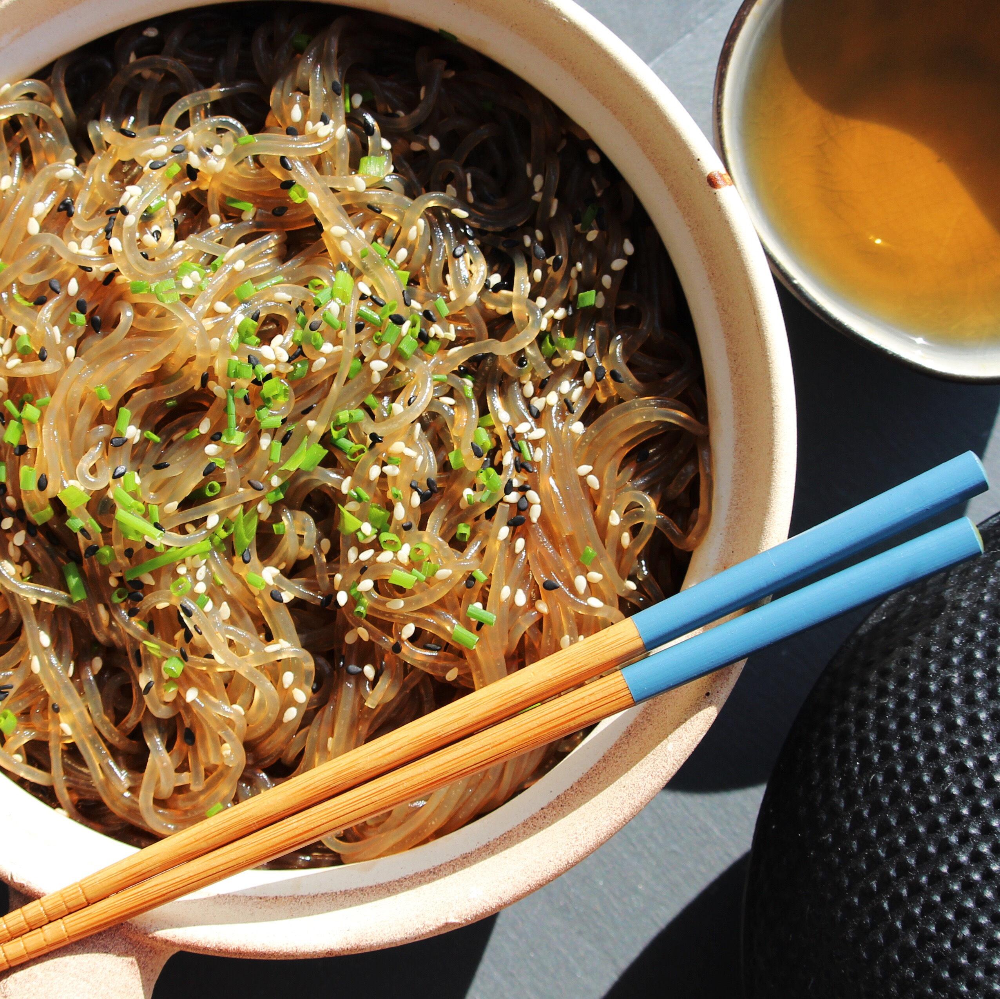

Sichuan Glass Noodles
Description:
I learned how to make these noodles while living in Chongqing, China from 2019 to 2022. They're a classic, fast, and easy meal that can be adapted by adding stir-fried meats or other vegetables.
I make these noodles down-home style, by not measuring anything. Search your soul, for that is how much you need.
Ingredients:
- a splash of oil
- a handful of glass noodles
- a spoonful of fresh grated or sliced ginger
- several cloves of fresh, minced garlic
- a small handful of carrot, thinly sliced or julienned
- a large handful of shredded cabbage
- a generous splash of soy sauce
- a spoonful of oyster sauce
- a spoonful of crushed red pepper, or to personal taste
- a pinch to half a spoonful of whole sichuan peppercorn/prickly ash (optional)
- a pinch of sugar or honey (optional)
Directions:
- Boil water. Place glass noodles in boiled water off the heat and soak for a few minutes. When soft, drain and set aside.
- Heat a small amount of oil in a large wok and add ginger, garlic, red pepper, and prickly ash. Heat on low to release flavor. It should not smoke! Be careful not to burn the garlic.
- Add carrot for a minute or two, then cabbage to spiced oil and cook until soft.
- Add glass noodles, soy sauce, oyster sauce, and sugar (if desired) and fry until sauce is mostly absorbed.
Other additions: green or red onion, fresh hot peppers (green or red chilis), mushrooms, and other vegetables can be added with carrot and cabbage. A fried or boiled egg can be added on top for extra protein. Meat can be added to the spiced oil to cook, then removed to cook the vegetables, and added again with the noodles.